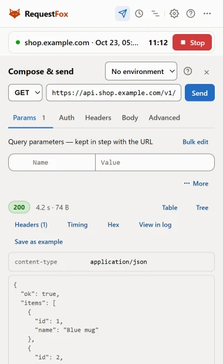

01 重放
重放它，或先编辑再发送
把任何录制下来的调用原样再发一次，或在“撰写”中修改它。内置环境、{{变量}}、支持设备码的 OAuth 2.0、OAuth 1.0a、JWT Bearer 和 AWS Signature v4，还可以同时打开多个请求。
在请求和集合上保存示例和备注。按网站开启的 Cookie 存储会把登录状态带到你之后的发送中，WebSocket 客户端还有 Socket.IO 模式。

无需登录，离线可用。RequestFox 是一款免费的 API 测试工具和网络监视器，在 Chrome 和 Firefox 的侧边栏中运行。它录制你的 Web 应用发出的每一个调用，在出错的那一刻就把问题调用标记出来，并让你重放、模拟和测试它们。
无需账号。不向我们发送任何数据。内部不含 AI。

这些 API 测试工具各有最适合的工作。如果你在测试一个 Web 应用，并希望它的 API 问题在发生的那一刻就被替你找出来，就选 RequestFox。
测试 Web 应用，并希望替你找出问题
RequestFox。你点击时它就录制调用，标记失败的、拖慢的、发了两次的或在 200 OK 里出错的调用，并保留每个会话。
原原本本地查看一次页面加载做的所有事情
DevTools 的 Network 面板。浏览器自带；由你来筛选和阅读。RequestFox 与 DevTools 对比
在团队中设计、编写文档并共享 API
Postman 或 Insomnia。RequestFox 能从两者导入，也能导出回两者。RequestFox 与 Postman 对比 · RequestFox 与 Insomnia 对比
把请求作为纯文件保存在 Git 中，和代码放在一起
Bruno。在 Chrome 中，RequestFox 也能把集合以文件形式保存在一个关联的文件夹里。RequestFox 与 Bruno 对比
一个可以自己托管的开源网页客户端
Hoppscotch。RequestFox 没有任何东西需要托管：它根本没有服务器。RequestFox 与 Hoppscotch 对比
调用一结束就会被判断。选一个标记，看看面板对它是怎么说的。
POST /api/orders 500 412 ms
为什么被标记？
服务器在响应时出错（5xx 状态）。
处理方法：查看服务器在这一时刻的日志；“重放”会再次发送同一请求，看是否复现。
GET /api/search?q=boots 200 3.1 s
为什么被标记？
响应耗时超过了你设定的慢速上限。
处理方法：“详情”中的“耗时”显示时间花在哪里；上限在设置中。
POST /graphql 200 96 ms
为什么被标记？
尽管 HTTP 状态是 OK，响应中却写明调用失败了。
处理方法：阅读响应里的错误：只看状态是看不出这个失败的。
GET /api/me 401 54 ms
为什么被标记？
调用被拒绝，且它发送的令牌已过期。
处理方法：重新登录或刷新令牌，然后再次发送调用。
GET /api/cart 200 120 ms
为什么被标记？
响应的结构（字段及其类型）与此调用以前返回的不同。
处理方法：打开卡片上的结构差异，查看变化了什么。
GET /api/stock/42 503 230 ms
为什么被标记？
此调用在一些录制的会话中失败，在另一些中成功。
处理方法：在“历史”中比较一次失败的和一次成功的响应。

01 重放
把任何录制下来的调用原样再发一次，或在“撰写”中修改它。内置环境、{{变量}}、支持设备码的 OAuth 2.0、OAuth 1.0a、JWT Bearer 和 AWS Signature v4，还可以同时打开多个请求。
在请求和集合上保存示例和备注。按网站开启的 Cookie 存储会把登录状态带到你之后的发送中，WebSocket 客户端还有 Socket.IO 模式。

02 模拟
打开一个调用并按“模拟”：它真实的状态码和响应体都摆在那里等你修改。再按确认用的“模拟”，重新加载页面，页面拿到的就是你的响应。规则还能让调用失败、变慢或暂停，完全不用碰后端。规则集和模拟集可以按你的需要一直开着。
在 Chrome 中，你还可以拖慢整个标签页，或用脚本改写请求或响应。被你改动过的调用会带上 已模拟 或 注入故障 标签，所以没人会把它们当成真正的 bug。

03 测试
为端点添加检查：状态、耗时、字段、请求头或 JSON Schema，并把已保存的请求串成套件。可下载的命令行工具会在你的流水线中运行它们，有检查失败时让构建失败。你还会得到关于缓存和压缩的建议，以及一项检查：响应是否和上次保持一致。
集合可以从 Postman、Insomnia、Bruno、Hoppscotch 和 Thunder Client，以及 OpenAPI 3、Swagger 2、WSDL、HAR 和 cURL 导入。也可以导出为 Postman 集合，Bruno、Insomnia 和 Hoppscotch 的集合，OpenAPI 3.0，一个 API 文档页面，15 种语言的代码，或 Playwright、Cypress、k6、JMeter、Gatling 和 Locust 脚本。
$ node requestfox-ci.mjs assert --config requestfox.config.json
✓ GET /api/me — status = 200 (actual: 200)
✓ GET /api/cart — status = 200 (actual: 200)
✓ GET /api/search?q=boots — status = 200 (actual: 200)
✖ GET /api/search?q=boots — latency < 800ms (actual: 1305) [RF-CHECK-LATENCY]
✖ POST /api/orders — status = 200 (actual: 500) [RF-CHECK-STATUS]
5 assertion(s) checked.04 AI 工具
RequestFox 不运行任何 AI 模型。它测试你构建的 AI 工具：“撰写”可以连接 MCP 服务器并调用它的工具；对大语言模型 API 的调用会显示模型、响应给出的令牌数、停止原因和耗时。
开启 MCP 控制后（默认关闭），你自己电脑上的 AI 智能体可以通过 RequestFox 录制、重放和模拟。每一次发送和重放都要等你点击确认。
正由本地 MCP 客户端控制
允许此 MCP 操作吗？
本地 MCP 客户端请求：发送 POST shop.example.com/api/orders。除非你允许，否则什么都不会发生。
取消允许
每个 fetch、XMLHttpRequest、WebSocket 帧和服务器发送事件一开始就会出现，跨越标签页、框架和弹出窗口，连 Service Worker 响应的调用也不例外。
每个调用都关联到引发它的那次点击或表单提交，每个会话都保存在“历史”中，方便和下一次对比。
在 Mac 上，按键是 Option Shift S。也可以打开侧边栏，按“开始录制”。如何一步步录制 API 调用
为 QA 测试人员、前端开发者和 API 开发者而写。所有指南，包括按 OpenAPI 规范检查调用。
它能读取来自 5 个其他 API 应用的集合，生成 15 种语言的代码，把一次录制变成 6 种工具的测试，界面支持 14 种语言。费用是零。
是的。RequestFox 是免费的，我们的承诺写在这里：今天你能免费使用的任何功能，以后都不会变成付费。它没有广告、没有账号，也没有付费版。
不会。RequestFox 录制的一切都保存在你设备上的浏览器存储里。没有 RequestFox 服务器、没有分析统计，也没有账号。在 RequestFox 保存、记录或导出的所有内容中，Authorization 请求头、Cookie 以及看起来像机密的字段默认都会脱敏（“撰写”按原样显示你自己请求的响应；它的最近列表会在这台设备上保留你最近 100 次发送，已脱敏，直到你按“清除”）。只有在你按“开始录制”时，或者针对相关网站，在你从“撰写”发送、或在没有录制时运行测试套件时，才会请求网站访问权限。
不使用。RequestFox 不运行任何 AI 模型。它可以测试你构建的 AI 工具：MCP 服务器，以及页面对大语言模型 API 发出的调用。开启 MCP 控制（默认关闭）后，你自己电脑上的 AI 智能体可以操作它，而每一次发送都要等你点击确认。
RequestFox 是一款免费的浏览器扩展：它可以用环境、{{变量}}、包括 OAuth 2.0 在内的认证助手和已保存的集合来编写并发送请求；导入 Postman、Insomnia、Bruno、Hoppscotch 和 Thunder Client 的集合；导出 Postman 集合以及 Bruno、Insomnia 和 Hoppscotch 的集合。与独立客户端不同，它还会录制你的 Web 应用真正发出的调用。它没有云端工作区，也没有团队同步。
DevTools 显示每一个请求，判断留给你自己。RequestFox 在调用发生时就标记失败、缓慢、重复和重试的调用，把每个调用关联到引发它的点击，检查你为每个端点设的规则，并保留每个会话，让你可以把今天的运行和昨天的对比。若要原原本本、实时地查看页面加载的一切，DevTools 更合适。